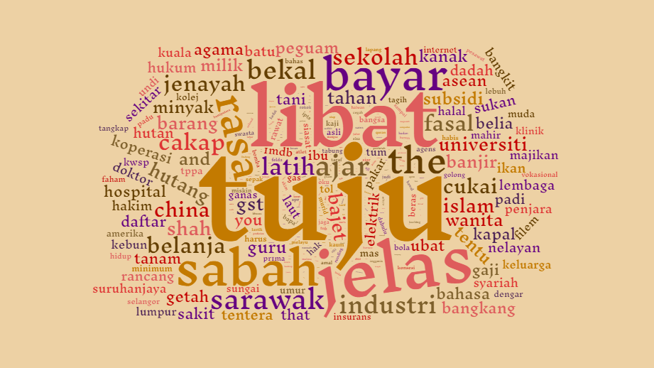
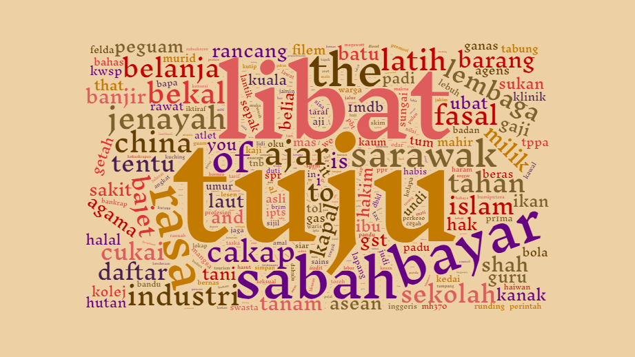

TMOP
2
Distribution of words frequencies in 10 topics
Distribution of words frequencies in 20 topics
Wordclouds
Home
English Order Paper
Lda2vec
LDA
Lda2vec (Extended)
Malay Order Paper
Lda2vec
LDA
Hansard
Lda2vec
LDA

Tokens found in Topics,
n
= 20

Tokens found in Topics,
n
= 30